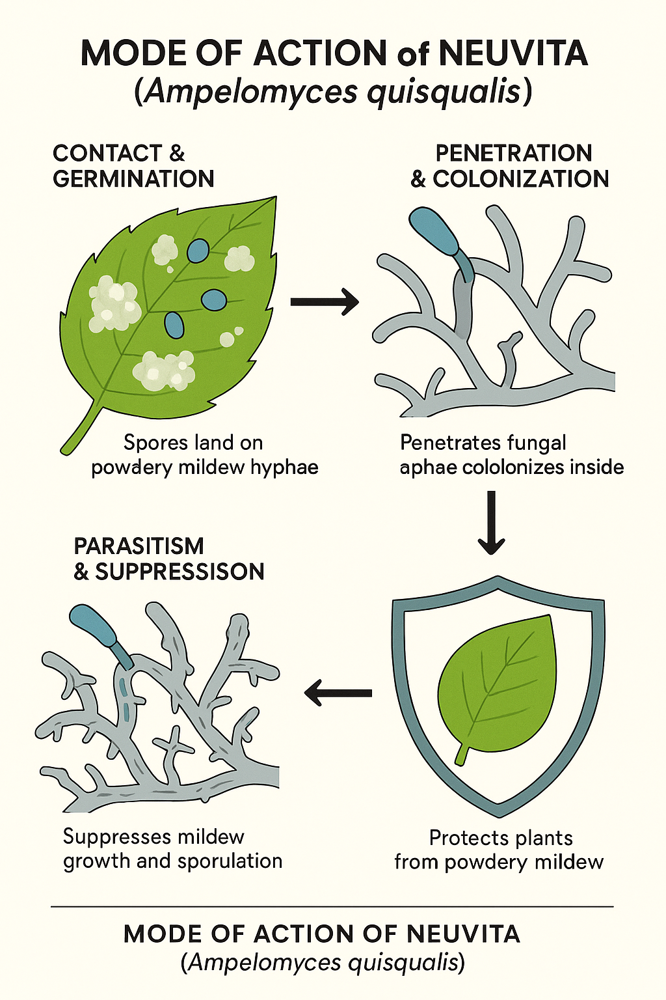

Overview
Neuvita introduces a natural approach to managing powdery mildew by harnessing the power of Ampelomyces quisqualis, a mycoparasitic fungus that parasitizes and destroys mildew colonies on plant surfaces. It works preventively and curatively, helping growers maintain healthy, residue-free crops.
Mode of Action
Ampelomyces quisqualis acts as a mycoparasite of powdery mildew fungi. Its spores attach to mildew colonies, germinate, and penetrate the hyphae, inhibiting fungal growth and sporulation. This interrupts the disease cycle and prevents new mildew formation.
Key Features
- Contains viable spores (1×1010 CFU/g) ensuring high efficacy.
- Mycoparasitic activity specifically targeting powdery mildew fungi.
- Both preventive and curative efficacy under field and greenhouse conditions.
- Safe for beneficial microbes and pollinators.
- Organic-certifiable and residue-free formulation.
Dosage & Dilution
| Formulation | CFU Count | Dosage (per acre) | Dilution | Spray Interval |
|---|---|---|---|---|
| WP | 1×1010 CFU/g | 500–1000 g | 2–3 g/L | 7–10 days |
| EC | 1×1010 CFU/g | 400–500 ml | 1.5–2.5 ml/L | 7–10 days |
Compatibility
- Compatible with organic foliar fertilizers and botanical extracts.
- Avoid mixing with fungicides or copper-based products.
- Apply during early morning or evening under humid conditions for best results.
Target Use & Benefits
Recommended Crops: Vegetables, fruits, ornamentals, and plantation crops.
Target Diseases: Powdery mildew (all crop species).
Key Benefits: Natural suppression of powdery mildew through mycoparasitism, eco-friendly, and export-compliant solution for sustainable agriculture.